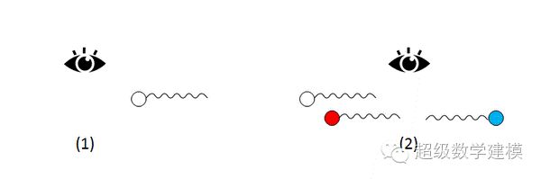
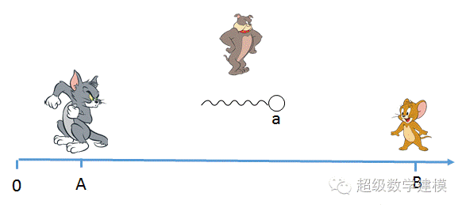
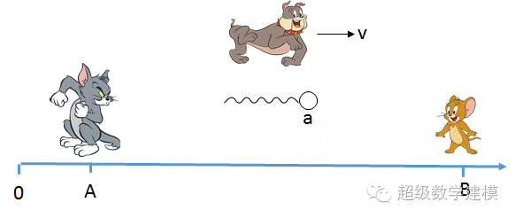
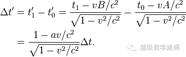
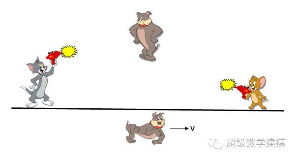
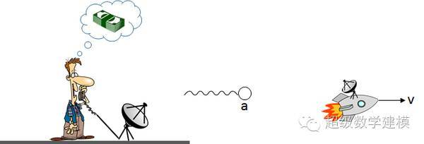

如果可以超过光速，相对论确实允许回到过去。有打油诗为证：
年轻女郎名伯蕾，神行有术光难追。
爱因斯坦来指点，今日出游昨日归。
伽莫夫 《从一到无穷大》
但是，要做的这一点，方法比你想象的可能要复杂一点。
1. 关于快子(tachyon)
要达到回到过去的目的，首先我们要解决超光速运动的难题。
但是，我们无法让你亲身体验超光速运动，因为作为一个拥有正常质量的物体，你的质量会随着速度提高而增加。即使耗尽宇宙中的所有能量，也无法把你加速到光速，更不用说超过光速了。我们必须寻找一种天生就能超光速运动的物质，来完成这个使命。
快子是一种假想中的粒子，它总是以超过光速的速度运动。迄今为止，真正的快子从来没有被发现过，物理学家们对这种粒子是否能够存在也一直存在争议。下面我们先来看看快子的一些奇妙特性。
根据洛伦兹不变性，狭义相对论同样适用于超光速运动的快子。所以，一个静质量为m，速度为v的快子具有能量
由于快子速度v大于光速c，不难看出，上面分母中根号内的值是负数，也就是说，分母是虚数。而一个物体的能量必须是实数，这就要求快子的静质量也是虚数。
超光速运动的快子可以赶上它发出的光（如果快子可以发出可见光让你看见），所以，当一个快子向你飞来时，你不会看见它。只有当它经过你以后，它发出的光才会到达。同时，它经过你以后发出的光也会被你看见。这时候的视觉效果是，一个快子一分为二，向相反的方向飞去。

上图（2）中的蓝色快子影像来自它到达你以前发出的光，看起来它朝着快子运动方向相反的方向飞去。而红色影像来自它经过你以后发出的光，这个影像运动方向和快子运动方向一致。由于多普勒效应，这两个影像的光会分别表现出蓝移和红移的效果。
不过这只是光学上的小把戏，不用把它看成真正的逆转时间，飞回过去。下面我们来看看怎么让快子真正地回到过去。
2. 简单的实验

在这个例子中，站在A处的猫向站在B处的老鼠发射了一个速度为a快子。假设猫发出快子的时间是t0，老鼠接受到快子的时间是t1，那么两者之间的时间差就是
对于这个简单的结果，连站在中间的狗也不会有什么异议。所以，虽然我们用上了超光速的快子，却并没有看到回到过去的效果。
下面我们改进一下这个实验，让狗以速度v（小于光速）向右运动。

现在，狗在一个不同的惯性系中，它对时间t0和t1也有了不一样的认识，而两个事件（“猫发出快子”和“老鼠接收到快子”）之间的时间差需要用洛伦兹变换来计算：

虽然狗的运动速度v小于光速c，但是快子的速度a大于光速c。在av>c^2的条件下，上面计算结果中的分子将会是负数（例如，v=0.2c，a=6c）。这就意味着对于狗来说，老鼠接收到快子早于猫发出快子 —— 因果关系颠倒了。
当然，从猫和老鼠的角度来看，并没有什么不妥。因果关系仍然是正常的。那么，三个动物做出的相互矛盾的观察，哪一个是对的呢？狭义相对论认为，没有一个惯性系优于其他的惯性系，所以，它们都是对的。
3. 狭义相对论中的同时性（simultaneity)
这里的分析是基于狭义相对论中的同时性概念。多数人对狭义相对论的理解是“钟慢尺缩”，却对同时性了解甚少。
相对论中的因果关系不是指逻辑上的因果关系（如”天上下雨，地上就湿”），而是指两个事件之间能否以光速传递信息。如果两个事件之间可以以光速传递信息，那么两个事件就有因果关系，也就是所谓的光锥之内。如果不能以光速在两个事件之间传递信息，我们就可以认为两个事件可以同时发生（它们在彼此的光锥之外）。然而，这个同时性也是相对的，不同惯性系中的观察者对事件的顺序会有不同的观察结果。

比如，在上面的图中，站在中间的狗会认为猫和老鼠同时开枪，而向右边运动的狗却会认为老鼠比猫线开枪。同样，由于所有的惯性系都是平等的，所以它们的观察结果都是正确的。
在运动速度小于光速的情况下，有因果关系的事件无论从哪一个惯性系观察，时间的先后顺序都不会有区别——原因总是早于结果。然而，在超光速运动的惯性系中，因果关系也会被颠倒——结果可能先于原因，就像第2节中的例子一样。
4. 发送消息到过去
在第2节的例子中，你可以认为狗是一个无关紧要的旁观者，所以这个结果好像并不十分有趣。不过，从这个例子我们可以得到一个启示：要想让快子回到过去，我们需要利用一个相对运动的惯性系。
我们来设计一种能够让你和过去通信的装置——快子电话（tachyonic antitelephone）。这个装置包含两个部分：
1. 你拿着的快子发送和接受装置
2. 一个装在宇宙飞船上面的快子反射装置，它接收到快子信号后，会立即把快子反射回去。

快子电话的操作方法很简单：你向飞船发射快子信号，飞船把快子信号反射回来给你。
和前面的简单例子比较，你会发现这个飞船实际上同时扮演了老鼠和狗的角色——它既是一个运动的惯性系，还能够接受快子信号。这就意味着它可以在信号发出之前接受到信号，并且有可能在信号发出之前把信号给你送回去。所以，这是一个货真价实的和过去通话的装置。
我们来看一个具体的例子。
现在，你打算用这个快子电话发一笔横财。具体方法是，在彩票头奖号码出炉以后，把号码发给过去的自己。
最初，飞船和你的距离为0，并以0.8倍光速（0.8c）远离你运动。根据洛伦兹变换，这个速度将导致运动中的物体的时间以0.6的比例膨胀（洛伦兹因子为0.6）。
首先我们从你的惯性系来分析。
1.你的时间过去300天以后，彩票头奖号码公布了。你向用快子向飞船发出彩票号码。快子速度为2.4倍光速（2.4c）。
2.150天以后（第450天），你计算快子运动了150 x 2.4 = 360“光天”的距离（模仿光年的概念，我们把“光天”定义为光运动一天走过的距离）。
3.由于飞船以0.8c的速度走了450天，它也应该走了450 x 0.8 = 360 光天，所以，在第450天，飞船应该接收到信号了。
4.由于相对论的时间膨胀效果，飞船上的时间实际上只过了450 x 0.6 = 270天。
所以，你在发出彩票号码以前300 - 243 = 57天以前收到了彩票号码，如愿以偿地获得了头奖。
5. 悖论
然而故事还没有完，得到头奖以后，你发现既然钱已经到手，就没有必要在向过去的自己发送彩票号码了。这无疑就导致了一个悖论——如果不发送号码，过去的自己就不能得到号码。如果你真的不再发送号码，会有什么后果呢？你的银行账户汇噗的一声清零还是你依然可以纸醉金迷的度过余生呢？
其实，即使你没有改变主意，悖论也会发生。在你用快子信号发出彩票号码的时候，你并没有中奖。当彩票号码被送回过去以后，你在过去中奖了。那么，现在的你，是中奖了还是没有中奖呢？你会吃惊地发现银行账户多了一笔巨款，还是理所当然的接受这个结果呢？
对于任何从未来影响过去的理论，无论是快子还是虫洞，悖论似乎都是不可避免的。包括爱因斯坦在内的物理学家们都认识到了这一点。爱因斯坦的观点是，这种悖论并不影响我们对因果关系的认识，它只能说明，超光速运动是不可能的。
然而，今天的物理学家们也没有完全否定快子的可能性。近年来也有一些新的理论试图消除超光速导致的悖论。比如，”自洽原则“理论认为，宇宙有自己固有的机制来防止悖论的产生。如果这个理论成立的话，在上面的例子中，宇宙也许会通过我们还无法认识的机制，阻止你中奖，或者强迫你把那个快子信号送出去，从而避免产生悖论。此外，诞生于量子物理的多世界理论（平行宇宙）也试图通过分叉的时间线来解释和避免悖论——如果你影响的过去是另一个平行宇宙，悖论自然就不不存在了。
补充一点，并不是可以穿越，而是可以自身的时间停止，举个例子，假如你拥有光速，你绕地球跑一圈只需要0.2秒，跑完回到出发点后。出发点已经过去了好几秒。扩大算一下，比如你25岁，有了儿子，儿子1岁，你开始跑，你以光速整整跑了1年。这时你有26岁，但是你的儿子已经20岁了，当然这只是约算。
超过光速有卵用，你还在同一个时空当中，超过光速看到的是过去的映像，而不是回到过去。要回到过去，类似于平行宇宙才行 。
一个遥远星球的光4亿年到达地球，也就是说我们所看到的是这个星球4亿年前的一切，如果我们超光速到达那个星球，那我们相当于回到了那个星球的过去